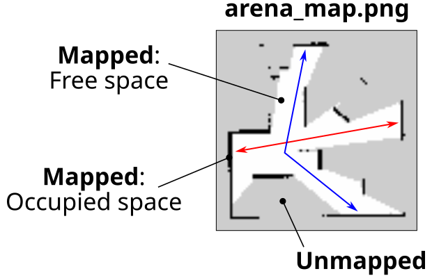

Task 3: Exploration & Search
Update 17/04/2026
- Photo of the real robot arena added.
- Number of obstacles slightly reduced!
Develop ROS node(s) to allow a TurtleBot3 Waffle to autonomously explore as much of the full Computer Room 5 robot arena as possible, whilst searching for a beacon and documenting its exploration with a map of the environment as it goes!
Course Checkpoints
-
You should have completed Parts 1-6 of Assignment #1 in full to support your work here.
-
Understanding the Waffles is also essential to your success in this task, so make sure you have considered ALL of the folllowing:
-
You will also need to consider some of the Advanced Launch File Concepts discussed here.
Summary¶
This task builds on what you did for Task 2. This time however, your robot will need to navigate a more densely populated arena (i.e. more obstacles), so there'll be less room to navigate freely, and more chance of collisions occurring! Once again, the main aim is to safely explore as much of the arena as possible, but with a bit more time to do so now. At the same time, you'll need to search for a beacon of a particular colour and try to capture an image of it. Finally, you'll also need to document your robot's exploration by building a map of the environment (with SLAM) as it explores, and save this map for us to view afterwards.
Details¶
The Environment¶
You've become very familiar with the Computer Room 5 Robot Arena by now, and you will be exploring this once more! Here's what to expect for Task 3:

The above is just an example of what the real arena might look like, but what we can say is this:
- The arena will contain various wooden walls 180 mm tall, 10 mm thick and 440 mm or 880 mm in length (a combination of both lengths will be present).
- Walls will be assembled together at least in pairs (since they can't stand up on their own!), but a single wall assembly could comprise more than two walls, and any combination of wall lengths.
- The location and orientation of wall assemblies, as well as the relative angles between walls within each assembly will vary.
- Walls and/or wall assemblies could also vary in quantity slightly too (there might be a few more, there might be a few less).
- The arena will always contain four cylindrical beacons of 200 mm diameter and 250 mm height, each of a different colour: one yellow, one red, one green and one blue.
- The beacons could also be located anywhere in the arena.
- "Corridors" in the arena (i.e. the free spaces for the robot to explore) will always be sufficient for a robot to pass through with some clearance. You should anticipate some very small gaps to be present however between adjacent walls in wall assemblies for example (due to the hinges), or the "wedges" that form between a beacon placed up against a wall (like in the example above). Your exploration algorithms will need to be robust to these unavoidable small gaps.
- The robot could start anywhere in the arena: any zone, any position within a zone and at any orientation.
Exploration¶
-
Your robot will have 3 minutes (180 seconds) in total to complete this task.
Note: The timer will start as soon as the robot starts moving within the arena.
-
The arena floor will be marked out into 16 equal-sized zones (each 1 m x 1 m square). You will be awarded marks for each of the zones that your robot enters within the time available (excluding the one it starts in).
Note: Exploration marks only count when the robot's entire body enters the zone.
-
Your robot will need to successfully explore whilst avoiding contact with anything in the environment.
Any contact the robot makes with the environment is counted as an "incident." Once an incident has taken place, we'll move the robot away slightly so that it is free to move again, but after five incidents have occurred the assessment will be stopped, regardless of how much time has elapsed.
Searching for a Beacon¶
As with the previous 2 tasks, we will launch the ROS node(s) from within your package for this task using ros2 launch (more details below). For this one however, we will also supply an additional argument when we do this:
...where COLOUR will be replaced with either yellow, red, green or blue (always in lower case). This target colour will be selected randomly. Based on this input, your robot will need to capture an image of the beacon of that colour.
You will therefore need to define your launch file to accommodate the target_beacon command-line argument. In addition to this, inside your launch file you'll also need to pass the value of this to a ROS node within your package, so that the node knows which beacon to actually look for (i.e. the yellow, red, green or blue beacon). This kind of launch file functionality wasn't covered in Assignment #1, but there are some additional resources available to help you with this.
Upon launching your task3.launch.py launch file, a Log Message must be generated by one of your ROS nodes to indicate the specified colour for the search task. This log message must be of INFO severity (i.e. using a get_logger().info() method call), and must be generated within 10 seconds of executing your launch file. The message should be formatted exactly as follows:
...where COLOUR must be replaced with the actual colour that was passed to your task3.launch.py file (either yellow, red, green or blue).
Saving the Image¶
At the root of your package there must be a directory called snaps, and the image must be saved into this directory with the file name: target_beacon.jpg, i.e.:
The image that is saved here must be the raw image from the robot's camera, and should not include any filtering that you may have applied in post-processing.
Be aware
Understanding the Waffles: The Camera and Image Processing. There are some key things that you should investigate here, such as:
- The name of the camera image topic on the real robots.
- The native resolution of the camera images, and how this might impact any image processing that you do.
Mapping the Environment¶
Marks are also available in Task 3 for using SLAM to generate a map of the environment whilst your robot is exploring, and saving this map to your package directory (as an image).
Generating a Map¶
One of the earliest exercises you did with the Waffles (back in the Week 1 lab!) was to use SLAM to create a map of the environment. You will have also had a go at this in simulation too, in Part 3 of Assignment #1. Notice that you used the same launch file in both cases, but with one subtle difference:
... which one do you think you might need to apply here?!
Saving a Map¶
Think back to Assignment #1 Part 3 Exercise 5 again now, and how you were able to save a map as an image from the command-line using a ros2 run call:
It's also possible to do this programmatically using the ROS 2 Service framework. Consider Assignment #1 Part 4 Exercise 6 for how this could be done from within one of your Task 3 ROS nodes.
The root of your package directory must contain a directory called maps, and the map that your robot generates during exploration must be saved as a png image into this directory with the name arena_map.png, i.e.:
Executing Your Code¶
Your team's ROS package must contain a launch file named task3.launch.py, such that (for the assessment) we are able to launch all the nodes that you have developed for this task via the following command:
XX will be replaced with your team number and COLOUR will be replaced with either yellow, red, green or blue.
Note
ROS will already be running on the robot before we attempt to execute your launch file, and a Zenoh Session will be running on the laptop, to allow nodes running on the laptop to communicate with it.
Advanced Launch File Features¶
As discussed above, you'll need to be able to do some slightly more advanced things with launch files for this task, such as:
- Accepting command-line arguments.
- Passing command-line arguments to ROS nodes.
- Launching other launch files and passing launch arguments to these too, to configure their behaviour.
All of this is covered in additional section of the ROS 2 Course, see here:
Dependencies¶
You may draw upon pre-existing Python libraries or ROS 2 packages in your own work for Assignment #2, but there are restrictions that you must be aware of. See here for more details on this.
Nav2
The use of Nav2 is permitted for Task 3, but you should proceed with caution if you opt for this. See here for more details.
Marking¶
There are 40 marks available for this task in total, awarded based on the criteria outlined below.
| Criteria | Marks | Details |
|---|---|---|
| A: Exploration | 15/40 | For this task, the arena will be divided into sixteen equal-sized zones. You will be awarded 1 mark for each zone that your robot manages to enter, excluding the one it starts within. The robot only needs to enter each zone once, but its full body must be inside the zone marking to be awarded the associated mark. |
| B: An 'incident-free run' | 5/40 | If your robot completes the task (or the 180 seconds elapses) without it making contact with anything in the arena then you will be awarded full marks here for an incident-free-run! You will however be deducted 1 mark per unique "incident" that occurs during the assessment. Your robot must at least leave the zone that it starts in to be eligible for these marks and once five incidents have been recorded in total then the assessment will be stopped. |
| C: Searching for a Beacon | 15/40 | Further details below. |
| D: Mapping the Environment | 5/40 | Further details below. |
C: Searching for a Beacon¶
There are 15 marks available for Criterion C.
| Criteria | Details | Marks |
|---|---|---|
| C1 | Upon launching your task3.launch.py launch file, a Log Message must be generated by one of your ROS nodes to indicate the correct target colour for the search task. This Log Message must occur within 10 seconds of executing your launch file, be of the format specified here, and must be achieved using a get_logger().info() method call. |
2 |
| C2 | At the end of the assessment a single image file called target_beacon.jpg must have been obtained from the robot's camera (during the course of the assessment). This must be located in a folder called snaps at the root of your package directory: ~/ros2_ws/src/com2009_teamXX_2026/snaps/target_beacon.jpg. |
2 |
| C3 | Your target_beacon.jpg image file (at the path stated above) contains any part of the correct beacon. |
3 |
| C4 | Your target_beacon.jpg image file (at the path stated above) has captured the full width of the correct beacon. |
3 |
| C5 | Your target_beacon.jpg image file (at the path stated above) has captured the full width and full height of the correct beacon, and the beacon is entirely unobscured. |
5 |
D: Mapping the Environment¶
There are 5 marks available for Criterion D.
| Criteria | Details | Marks |
|---|---|---|
| D1 | A map of any part of the robot arena (however small) must have been generated during the assessment. By the end of the assessment, two files should exist: a png and a yaml, both of which must be called arena_map, and both must be located in a maps folder at the root of your package directory: ~/ros2_ws/src/com2009_teamXX_2026/maps/arena_map.png and ~/ros2_ws/src/com2009_teamXX_2026/maps/arena_map.yaml. |
2 |
| D2 | Your arena_map.png file (created during the assessment and at the path stated above) depicts all free/occupied space extending from any one of the outer arena walls to the opposing outer arena wall, uninterrupted (i.e. containing no unmapped regions), across any part of the arena, to a width of at least 0.5 meters. For example, either the red or blue strips in the example map below would do the job: |
3 |
Simulation Resources¶
As with Tasks 1 & 2, there's a simulation that you can use to develop and test out your team's code against.
Remember
- Just because it works in simulation DOESN'T mean it will work equally well in the real world!
- Make sure you test things out thoroughly on the real robots during the lab sessions.
You can launch the simulation from the tuos_task_sims package with the following ros2 launch command:
Make sure you check for updates to the course repo to ensure that you have the most up-to-date version of this.
Once again, this is just an example of what the real-world environment could look like. See the notes above for the various ways the environment will vary when this task is assessed in the real robot arena.
In addition to this, note that beacons will be the same shape, size and colour as those in the simulation, but detecting colours is a lot harder in the real-world than it is in simulation, so you'll need to do a lot of real-world testing in order to get this working robustly on the real thing (you will have access to all the beacons during the lab sessions).